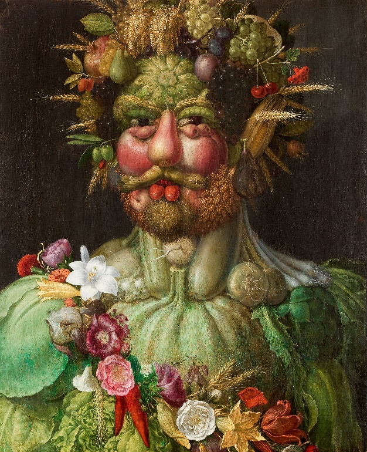

היצירה נוצרה בהשראת דיוקנו של קיסר האימפריה הרומית הקדושה רודולף השני מאת האמן ג'וזפה ארצ'ימבולדו (לחצו להגדלה).
הסבר על היצירה:
מבחינת הרובד העובדתי:
פורטרט של אדם במרכז, רקע שחור. הדמות מורכבת כולה מירקות, פירות, פרחים ועלים, אלמנטים מן הטבע. הדמות של גבר, מפנה את מבטו אל עבר הצופה, הדמות מאוירת בצבעים חזקים ומגוונים, ניגודיות בין צבעים (הרבה ירוק ואדום), הרקע כהה ומהווה קונטרסט שמבליט את הדמות. קומפוזיציה סטטית ומאוזנת אך לא סימטרית: ראש הדמות מופנה מעט, וקיים אלמנט אלכסוני לאורך גוף הדמות. ראשה של הדמות חתוך מעט בחלקו העליון.
מבחינת הרובד הפרשני:
שם היצירה מרמז על מעמדה של הדמות, מדובר בקיסר. היציבה של הדמות יכולה להעיד על מעמדה. ניתן לדמות את הצורה שבה מונחים האלמנטים על ראשו ככתר המסמל אופי מלכותי. האלמנטים השונים בתמונה ממלאים תפקידים שונים: גוף הדמות בנוי בעיקר מירקות בעוד שהוא מקושט בפרחים וראשו מאותר בפירות ודגנים, מה שמשקף את השימושים השונים שנעשו בתוצרים מן הצומח ומעמדם בקרב החברה באותה התקופה. הדימוי של האדם כמורכב מצמחים שיכול לרמז על חיבור לטבע או על תלות בפרי האדמה, לחיבור למעמד נמוך או סביבה חקלאית.
מבחינה אישית:
מצד אחד ליצירה יש מראה אסתטי ונעים לעיין, מקוון הצבעים והפרטים מעוררים הסתכלות מתארכת ותחושה הרמונית. מצד שני, כיוון שמדובר באדם שמדומה דרך חפצים, נוצרת בנו תחושה לא נעימה שהאמן מתלוצץ על הדמות שהוא צייר ורצה לרמוז כי האדם מורכב רק מחפצים חומריים ופשוטים ואין לו ארך מעבר לכך.
פה מוצג התוצר הסופי של קורס תקשורת חזותית, התוצר הינו תמונה מעובדת, ולאחריה סרטון עם הסבר קצר.
לחצו על התמונה כדי להגדילה לגודל מקורי

סרטון הסבר על היצירה: